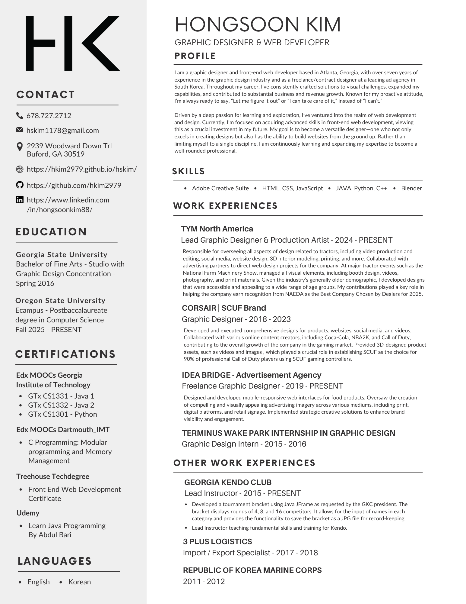

I’m a Graphic Designer focused on building work that connects brands with people in meaningful ways. The work I enjoy most is grounded in insight, shaped by culture, and built to connect with real audience needs. When it works, the result is campaigns, digital experiences, and content that feel less like advertising and more like something people actually want to engage with.
I’ve always believed the real strength of a brand lives in the emotional connection it creates. The creative that sticks rarely comes from shouting about features. It comes from understanding the audience first, recognizing what matters to them, and building ideas that resonate. Simple in theory. Slightly harder in practice.
I spent my career as a graphic designer at SCUF Gaming and TYM, learning the craft alongside some incredibly talented people. Those years built a strong foundation in insight-driven strategy and consumer behavior, which continues to shape how I approach my design work today.
Throughout my career, I’ve delivered brand strategy and creative solutions in the tech and machinery industries. This spans everything from brand campaigns and product launches to content and digital experiences, as well as communicating the core functions and benefits of each product.
One of the most rewarding parts of being a Graphic Designer is creating exceptional visuals that engage people, while establishing seamless workflows and a solid creative direction. As a current Computer Science student, my goal is to combine my practical design experience with a strong technical foundation, continuously expanding my skills across front-end and back-end development, digital strategy, and design to bridge the gap between creative vision and technical execution.
